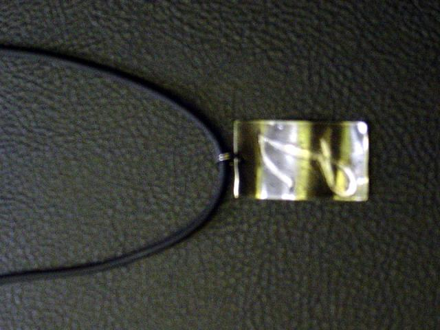
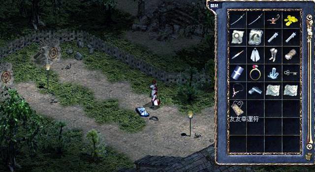
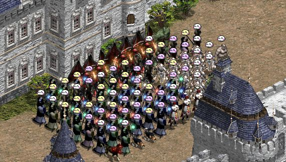
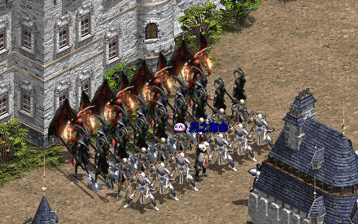
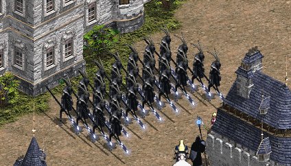

|
2002年10月31日
香港官方沒有提及的更新內容
1. 增加了部分怪物的特殊攻擊，暫時已知毒蝎會附加毒效果，食人妖精王會用跳火圈小範圍攻擊。
2. 部分怪物變為主動攻擊，暫時已知高侖熔岩怪及高崙鋼鐵怪會主動攻擊玩家（不論變身與否）。
PS: 由於上一次怪物經驗值公式的改變，再加上高崙鋼鐵怪變為主動攻擊，因此象牙塔4樓至8樓應該沒有人會去打吧．．．
香港伺服器10月31日更新內容
原文：香港天堂官方網站公告
1. 由創造怪物魔杖創出來的怪物在10分鐘後會自動消失。
2. 奇岩競技場暫時回復原來的功能。
張學友進＜天堂＞
原文：遊戲基地新聞
線上遊戲《天堂》與張學友的新專輯合作，即日起到各大唱片行買張學友的最新國語專輯『他在那裡』限量精裝版，就可以隨CD得到《天堂》1.91C版遊戲光碟與免費遊戲點數100點。《天堂》還將歌神張學友帶入虛擬世界，下個月舉辦『友友幸運符』活動。
遊戲橘子表示，與原研發遊戲廠商NCSOFT研究，透過程式製作虛擬寶物-友友幸運符，可以增加人物的幸運值，不過作用還不止如此，11月遊戲中將舉辦上線打怪收集『友友幸運符』活動，收集的越多前5名將張學友親自為前5名玩家戴上實物的友友幸運符，這個實物幸運符只有六個，除了張學友留一個外其餘都送給玩家。
另外據中央社報導，因為南韓「映像物等級委員會」日前以暴力、煽情等理由將《天堂》判定為僅限於十八歲以上成年人的遊戲，對此NC Soft決定將修改遊戲的內容以符合規定，遊戲橘子表示這些修改將來也將以自動更新的方式在台灣運作。
中央社的報導指出，NC Soft總經理金澤振表示將修改遊戲的內容以符合韓國政府的規定，修改的方向很多，包括限制玩遊戲時間、引進與家長的溝通機制，譬如以發送電子郵件，通告家長其子女玩遊戲的時間，另外在遊戲者長時間上線遊戲時，將發送警告訊息等，以減緩當地的青少年問題。
遊戲橘子副執行長呂寶麟表示，目前遊戲橘子還沒有得到詳細的遊戲修改內容，只知道韓方的態度是希望除了修改遊戲內容外，也能夠跟他們的政府翻案，因為其他國家都是以13歲為界線，韓國政府如訂為18歲將有損韓國遊戲產業的發展。他指出，其實遊戲剛推出時，內容的暴力傾向自然是為了要增強遊戲張力，不過遊戲橘子在之前也跟NC Soft方面反映一些減低暴力成份的建議，例如砍人時不要噴血，限制地點才能PK等。
真實的友友護身符：

虛擬的友友幸運符：

韓國測試伺服器10月30日更新內容
原文：韓國天堂官方網站公告
英文翻譯：Lineage Compendium
1. 遊戲談話視窗會顯示你的上線累積時間。
2. 史萊姆及賽狗場不會再售票，但我們仍可以將以前中獎的票賣給他們。
3. 在PvP的情況下，殺死對方後不會再掉道具，假如你是邪惡及被殺死，這會有一定的機率其中一件道具會消失。
4. 減少了部分邪惡魔法的懲罰：
毒咒：-300正義值
闇盲咒術：-400正義值
壞物術：-600正義值
木乃伊的詛咒：-2000正義值
黑闇之影：-800正義值
弱化術：-1000正義值
疾病術：-1000正義值
5. 在龍谷洞7樓或水龍洞重登將會回到最近的村莊。
6. 修正了其他錯誤。
香港太陽神 - 月族盟照
昨天在月族、月族大排檔和呆族在海音城拍攝了最新的盟照，氣勢非常嚇人！
月族大聯盟合照：

月族50級以上玩家合照，究竟當中有多少人呢？（圖中尚欠52+級StarKnight及50+級星霜）：

大巴軍團@.@，這可不是變身日III喔∼

萬聖節南瓜活動重要資料
來源：Lineage Compendium
- 南瓜糖果(Candy for Jack)售價為100金幣，南瓜面具(Pumpkin Mask)則為1000金幣。
- 南瓜怪分為兩種，普遍的是較弱的一種，另一種則是很強，但非常罕見。
- 我們要戴上南瓜面具(Pumpkin Mask)才能看見較弱的南瓜怪，而較強的不會戴面具也能看見。
- 假如要從南瓜怪中取得種子，正確的流程如下：
- 1. 戴上南瓜面具尋找南瓜怪。
- 2. 在看到南瓜怪後，先將南瓜糖果放在地上，在牠吃掉後才攻擊他，這樣才可以取得南瓜種子。
- 3. 假如有多於一位玩家攻擊同一隻南瓜怪，那麼南瓜怪便不會掉下任何道具（像妖魔圖騰的設定一樣），因此本網呼籲大家切勿攻擊別人的南瓜怪，否則只會一拍兩散，對相方也沒有好處。
- 較強的南瓜怪有普通攻擊及可損200HP的特殊攻擊，但其攻擊速度是非常慢的，除非它連續兩次都用特殊攻擊，否則用橙水也能補回來。LC的作者用30級騎，防-18，+3武刀，勇綠及史巴托變身狀態下只需25支橙水便順利殺死較強的南瓜怪。
- 當天可能可以直接或透過特殊裝備變身為南瓜怪，其行走速度是非常驚人的，有關資料可以參閱變身資料。
- 10個南瓜種子可換銅南瓜、25個換銀南瓜及50個換金南瓜，在使用那些南瓜後可以獲得某些道具。
- 1個大南瓜種子可換10個南瓜種子。
- 在韓國測試伺服器打開金南瓜可能會得到精靈T恤、龍鱗、龍鱗甲及防武卷等珍貴道具，但在美國測試伺服器打開金南瓜卻只有一粒種子、橙水、銀南瓜、變卷等廢物．．．
- 在線人數不多的美國測試伺服器要打約2小時才可齊50個種子換金南瓜，而且在那裡每隻南瓜怪都會掉3粒種子，因此大家要有極長時間作戰的心裡準備．．．
- 在正式伺服器應該不會那麼容易便能得到珍貴的道具，因此大家不要太過奢望隨便打開金南瓜便一定有好的道具。
|